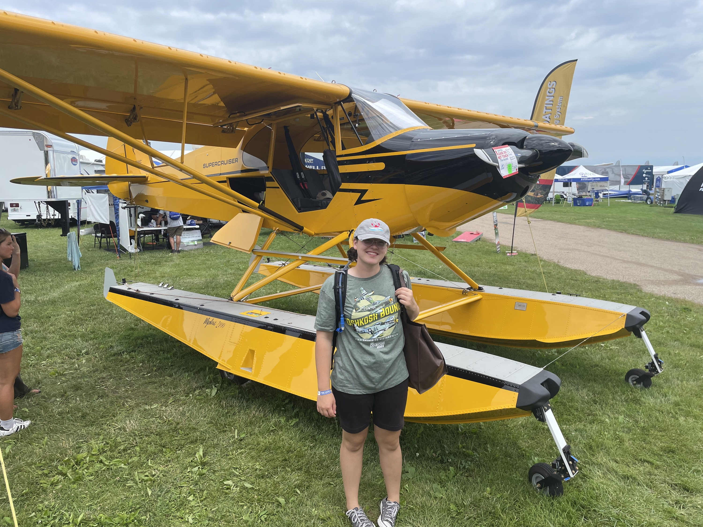
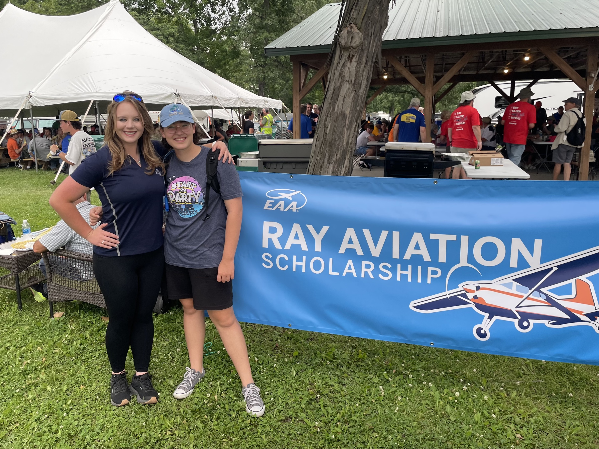

OshKosh

My dad and brother and grandpa and I went and visited Oshkosh Air Venture 2025. We went for three days and watched the night show on Wednesday. I went to lots of different classes, from seaplane flying to corrosion tips. My favorite class was with Lycoming, who took apart an engine and put it back together. It was fascinating to see all the pieces laid out and to see how they fit together, like a puzzle.
One day we spent the whole afternoon walking around and talking to different aviation colleges, meeting the representatives and seeing what made that college unique. There were a lot more missionary aviation training centers than I thought! Moody, LeTourneau, Liberty, and SMAT are the most prominent. After learning about cheaper options like USU or Lewis, we went to the missionary aviation section where the IAMA tent was. The International Association of Missionary Aviation includes organizations like JAARS, MARC, MAF, and Samaritans Purse. (We didn't end up seeing their DC-8 because it was on the other end of the grounds) We had dinner with Racheal, the only female pilot in JAARS, and she told us some crazy stories about some relief efforts she had helped with just in the US! We learned a lot of valuable and interesting information that day. The only problem was the military jets doing slow flight over our heads while we were trying to talk.
Later, we went to the EAA Ray Aviation Scholars Corn Roast picnic. I met a scholar from my chapter, 34, who had been giving me advice about flight training. It was great to finally meet her in person!
All in all, OshKosh was a lot of walking, but it was worth it to learn all the things we did! (Watching the aerobatic airshows was awesome too).
